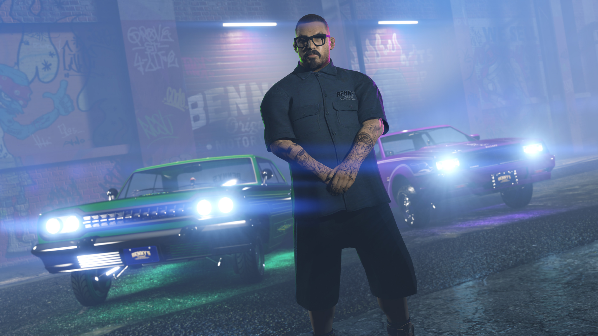

David, encargado de desarrollar todas las modificaciones implementadas en los vehículos de la serie lowrider, destaca por su trabajo en el kit de suspensión hidráulica y las llantas, completamente hechas desde cero, lo que le da un toque único a estas máquinas de antaño. Entre todas las modificaciones estéticas e internas, el costo total asciende a $100.000.000 entre los tres autos.